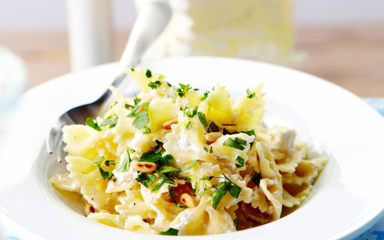

Pasta gremolata met ricotta

Ingredienten
- 500 g farfalle
- 1 el pijnboompitten
- 1 teenje knoflook
- 1 citroenschil
- 250 g ricotta
- Handje blandpeterselie
Bereiding
- Kook de pasta beetgaar in een ruime hoeveelheid gezouten water.
- Snipper de peterselie en de knoflook. Vermeng ze met de geraspte citroenschil.
- Schep de ricotta door de warme pasta en verdeel over de borden. Bestrooi met de gremolata en werk af met de pijnboompitten.
Supersnelle pasta met kerstomaatjes

Ingredienten
- 300 g kerstomaten
- 125 g mozzarella
- olijfolie
- fleur de sel
- 400 g tagliatelle (groene)
- basilicum
- peper
Bereiding
- Spoel de kerstomaatjes en halveer ze.
- Kook de pasta volgens de aanwijzingen op de verpakking. Giet af.
- Pluk de mozzarella in stukjes, verdeel ze met de tomaatjes op de pasta.
- Werk af met basilicumblaadjes, olijfolie, versgemalen peper en een beetje fleur de sel.
Chorizo met ei

Ingredienten
- 200 g chorizoworst
- 1 rode paprika
- 1 gele paprika
- 1 groene paprika
- 400 g tomatenblokjes (uit blik)
- zout
- 4 eieren
- lente-uien
- peper
Bereiding
- Snij de chorizo in blokjes, de paprika's in reepjes en de lente-uitjes in ringen.
- Meng de paprika met de tomatenblokjes, de lente-ui en de chorizo. Breng alles op smaak met flink wat peper en eventueel een klein beetje zout.
- Verdeel het mengsel over 4 individuele schaaltjes. Zet ze 3 à 4 minuten in de microgolfoven, op 600 Watt.
- Breek in elk schaaltje 1 ei, prik de dooier door en zet de schaaltjes opnieuw 1 à 2 minuten in de microgolfoven, tot het eiwit gestold is.